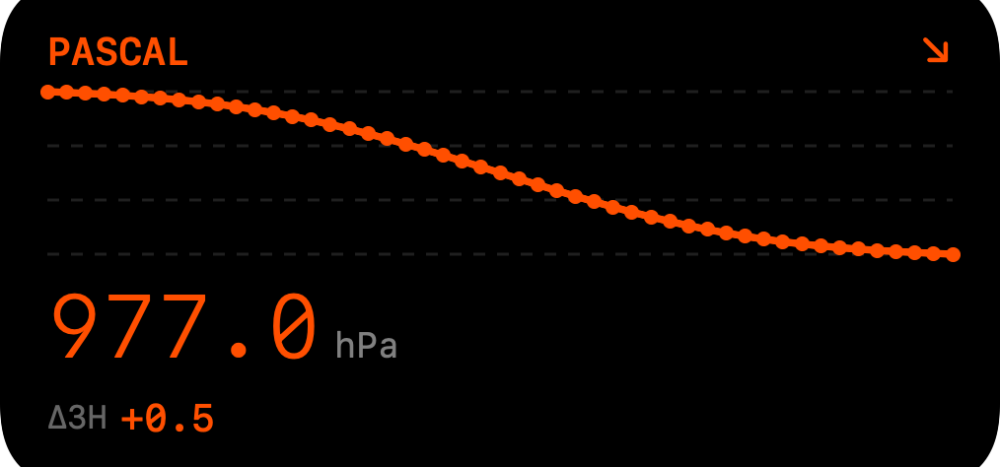
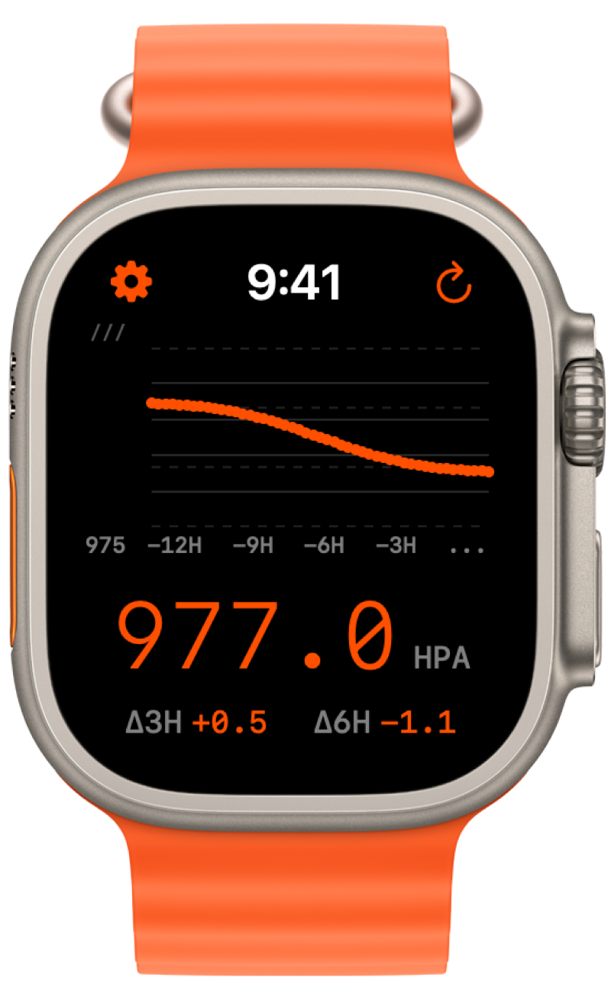

PASCAL
DOWNLOAD ON APP STORE
 TREND ANALYSIS
TREND ANALYSIS

HOME WIDGET
APPLE WATCHPascal tracks local atmospheric pressure using your device's barometer to detect weather changes and pressure fronts as they happen.
For people sensitive to weather changes, monitoring pressure trends can help you stay ahead of incoming weather fronts.
The core challenge: a 6-meter elevation change (two flights of stairs) shifts pressure by ~0.7 hPa—the same magnitude as a meaningful weather change over 3 hours.
Pascal uses a hybrid calibration system to filter movement noise and surface the weather signal you care about.
ON-DEVICE PREDICTION
Pascal predicts weather changes using only your pressure history—no internet required. Based on the Zambretti Forecaster (1915), a meteorological standard still used by professionals today.
| FALLING PRESSURE | Approaching low pressure system |
| RISING PRESSURE | High pressure building |
| RAPID DROP (>2 hPa/3h) | Storm likely within 6-12 hours |
Each prediction includes condition (Sunny, Rain, Storm...), confidence level, plain-English reasoning, and timeframe. All computed on-device—works in airplane mode.
LEARNS YOUR LOCAL WEATHER
Pascal's Bayesian ML model learns automatically from your pressure history. No user feedback required—predictions improve silently in the background.
| INSTANT BOOTSTRAP | Seeds model with Zambretti archetypes on first launch |
| AUTO-EVALUATION | Checks what actually happened after 6 hours |
| PERSONALIZATION | ~25 predictions to become localized to your area |
If you have a week of pressure history, Pascal is personalized immediately. The model combines 110-year-old meteorological wisdom with modern machine learning.
ZAMBRETTI-ALIGNED CONFIDENCE
Confidence levels follow classical meteorological research. Rapid pressure changes produce high-confidence predictions (clear signal), while slow changes appropriately lower confidence. Predictions are boosted when pressure level confirms the forecast.
12-HOUR TREND ANALYSIS
Real-time pressure visualization with interactive charts. Pan, zoom, and explore your atmospheric history.
HYBRID CALIBRATION
Two-layer system: movement compensation + GPS sea-level reduction. Aerospace-grade accuracy.
APPLE WATCH
Glanceable complications and full app. Watch displays iPhone data synced via WatchConnectivity for GPS-calibrated accuracy.
BACKGROUND SAMPLING
Continuous monitoring without draining battery. Samples every 15-30 minutes automatically.
HOME SCREEN WIDGETS
Multiple sizes for iPhone. Current pressure, trend arrows, and mini charts at a glance.
MOVEMENT FILTER
Intelligent rate-of-change detection separates weather signals from human activity.
| SENSOR | Bosch BMP280 Barometer |
| RESOLUTION | ~0.18 Pa (1.5 cm altitude) |
| ACCURACY | ±1 hPa |
| PRESSURE LAPSE RATE | ~0.12 hPa / meter |
| STORM THRESHOLD | 6+ hPa / 3 hours |
| SENSITIVITY REFERENCE | ~5 hPa / 24 hours |
| CALIBRATION | Hypsometric + Relative Altitude |
| DATA RETENTION | 48 hours rolling |
LAYER 1 // MOVEMENT COMPENSATION
Uses the barometer's relative altitude tracking to detect and remove pressure changes from stairs, elevators, and floor changes. More accurate than GPS for short-term movements.
compensated = raw + (relativeAltitude × 0.12)
LAYER 2 // SEA-LEVEL REDUCTION
Uses GPS altitude to convert station pressure to sea-level pressure (QNH). Enables comparison with weather forecasts and removes absolute elevation bias.
P_sea = P_station × (1 - (L × h) / T₀)^(-g / (R × L))
Each reading shows its calibration quality:
| FULL | Both layers applied (best quality) |
| GPS | Fresh GPS altitude (< 1 hour) |
| GPS* | Recent GPS (1-6 hours) |
| REL | Movement compensation only |
| CACHE | Cached GPS (> 6 hours) |
| RAW | Uncalibrated station pressure |
RATE-OF-CHANGE FILTERING
Detects movement vs weather based on pressure change rate:
| < 0.3 hPa/min | Weather (trusted) |
| > 0.3 hPa/min | Movement (filtered) |
Elevators, stairs, and driving are automatically filtered from trend calculations.
GPS ALTITUDE SMOOTHING
Rolling median filter (7 samples) rejects GPS jitter. Sudden jumps >10m rejected unless 5+ minutes pass.
— Barometric Formula (Wikipedia)
— Zambretti Forecaster (1915)
— Zaliva & Franchetti (CMU): GPS/Barometer Sensor Fusion
— ICAO Standard Atmosphere
— Bosch BMP280 Datasheet
— Apple CMAltimeter Documentation